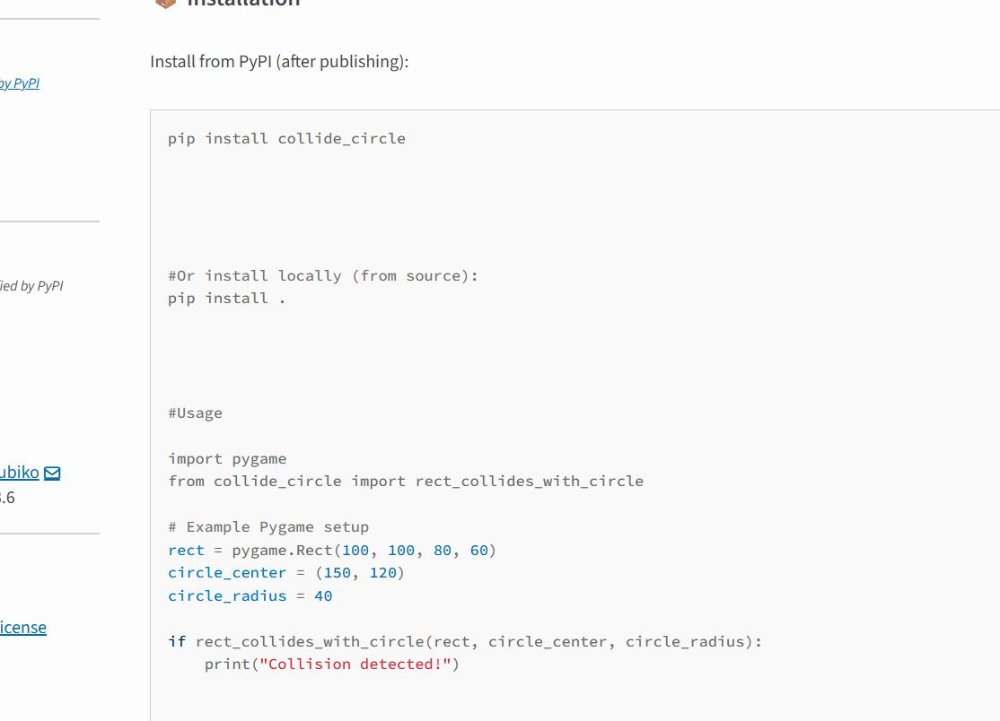

I build secure digital systems, developer tools, and research-driven technology solutions.
I am a software engineer and cybersecurity researcher focused on secure application architecture, real-world digital products, and developer tooling. My work spans production systems, Python libraries, and published research in blockchain, cybersecurity, and digital twin security.
About
I am a software engineer with a strong focus on cybersecurity and secure system design. I build reliable, scalable applications that prioritise data integrity, privacy, and performance.
My work combines practical engineering with research, particularly in blockchain-enabled digital twin systems, where I explore trust, security, resilience, and secure data architectures through both academic publications and real-world software development.
Technologies
 Python
Python Java
Java JavaScript
JavaScript HTML
HTML CSS
CSS PHP
PHP C#
C# Swift
SwiftEducation
Featured Projects
People-Card
A secure care management system with QR-based access, activity logs, rota management, incident tracking, and audit trails. Designed for real-world healthcare and workforce environments.
Problem solved: Care operations often rely on manual logging and fragmented records, making auditability, accountability, and secure access more difficult.
Security features: Role-based access control, secure authentication, audit logs, protected routes, and QR-based workflow access.
Tech: PHP, MySQL, JavaScript
Role: Sole designer and developer
Impact: Built as a live production system for secure care logging and workforce operations.
collide-circle (PyPI)
A Python package for circle-based collision detection in Pygame, created to simplify collision logic for developers building 2D games and simulations.
Problem solved: Collision handling in 2D Python games can be repetitive and error-prone, especially for developers implementing custom circle-based interactions.
Technical contribution: Published as a reusable Python package to make collision logic easier to integrate into Pygame projects and developer workflows.
Tech: Python, PyPI, Pygame
Role: Package author and maintainer
Impact: Released as a public developer tool for the Python ecosystem.

Professional Profiles
Personal Website
Main portfolio and professional profile showcasing my work, research, and technical background.
GitHub
Public code repositories, technical projects, and software development work.
PyPI
Published Python package contributions for the developer ecosystem.
Research & Expertise
My research and engineering work focus on cybersecurity, blockchain, secure digital systems, and digital twin security. I am particularly interested in how trustworthy architectures can improve resilience, integrity, and accountability in modern software systems.
Through my PhD and publications, I have explored blockchain consensus security, cybersecurity performance measurement, and trust frameworks for digital twin management. Alongside research, I apply these ideas in practical software systems and public technical contributions.